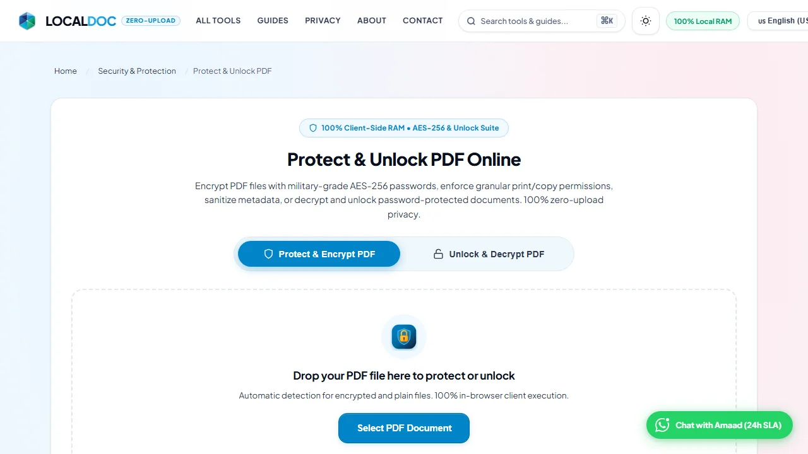
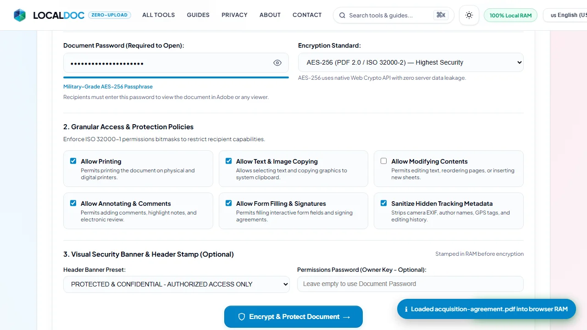
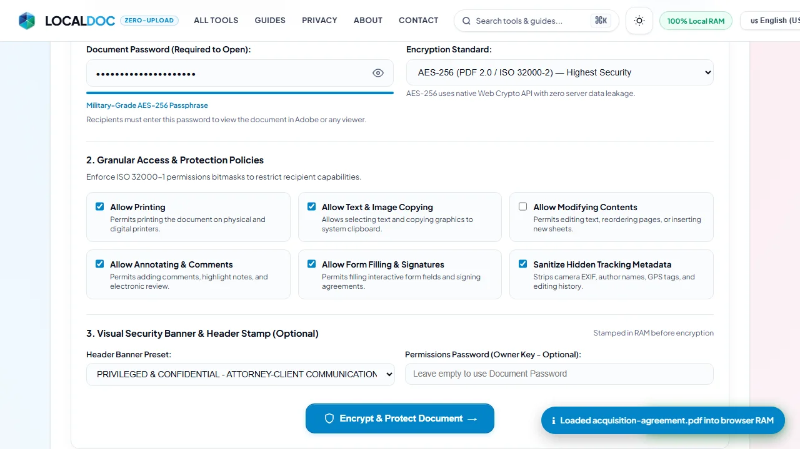
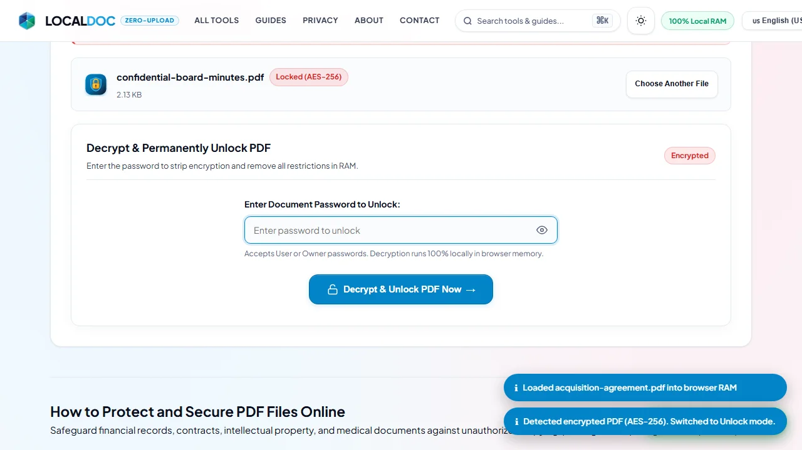
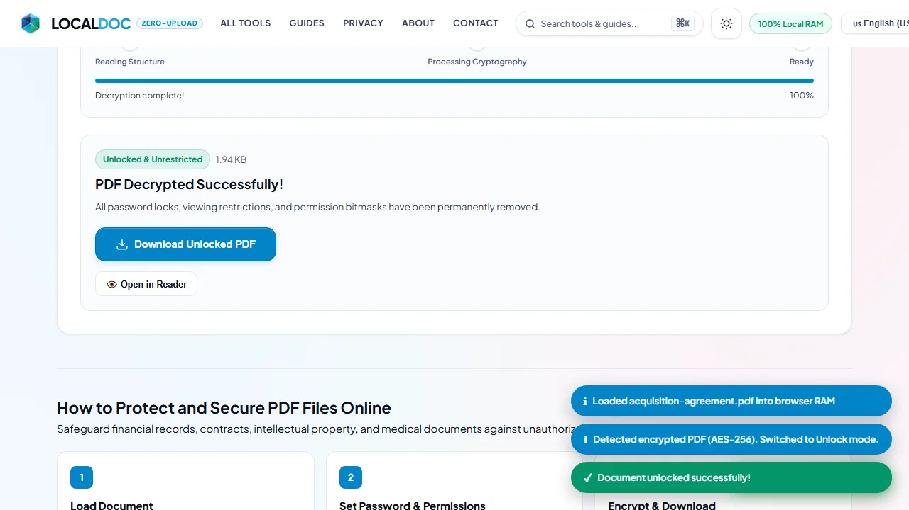

How to Password Protect & Unlock PDF Files in Browser RAM with AES-256 Encryption
The definitive guide to in-browser PDF security: encrypt contracts with military-grade AES-256, enforce granular print/copy permissions, sanitize tracking metadata, or decrypt and unlock password-protected files—all 100% inside your local device RAM without server uploads.
⚡ Fast Answer: How to Lock or Unlock a PDF in 10 Seconds
Open the LocalDoc Protect & Unlock PDF Tool. Drop any PDF into the workspace. If the document is unencrypted, enter an open password, toggle copy/print restrictions, and click Encrypt & Protect. If the document is already locked, our automatic engine detects the cipher, switches to Unlock Mode, prompts for the password, and instantly decrypts the file in RAM with zero server uploads.
Contents
- 1. The Cloud Converter Security Paradox: Why Cloud Protection Is a Hazard
- 2. Step-by-Step: How to Encrypt & Protect a PDF in Browser RAM
- 3. Step-by-Step: How to Decrypt & Permanently Unlock Password-Protected PDFs
- 4. User Password vs. Owner Password & The ISO 32000-1 Permissions Bitmask
- 5. Cryptographic Standards: AES-256 (Revision 6) vs. RC4 128-Bit
- 6. Visual Confidentiality Stamps & Metadata Sanitization
- 7. Frequently Asked Questions
1. The Cloud Converter Security Paradox: Why Cloud Protection Is a Hazard
When businesses, legal counsel, or individuals need to password-protect a sensitive agreement, tax return, or medical record, the most common instinct is to search for a free online PDF protector. However, this reveals a glaring architectural contradiction: in order to protect the file, cloud converters force you to upload the naked, unencrypted document across the public internet to their remote servers.
This creates immediate high-risk exposure vectors:
- Plaintext Transit Exposure: Unencrypted files can be captured by rogue proxies, ISP logging, or compromised local networks.
- Remote Disk Retention: Many online converters cache uploaded files on server disks for hours or days, creating high-value targets for data breaches.
- GDPR & HIPAA Non-Compliance: Transmitting medical records or personally identifiable financial statements to unvetted cloud processing servers violates international data sovereignty laws.
LocalDoc was built to eliminate this flaw. Using the browser's native Web Crypto API and client-side binary stream manipulation, your confidential files are encrypted directly in volatile device memory. Plaintext bytes never touch a network interface or external storage disk.
2. Step-by-Step: How to Encrypt & Protect a PDF in Browser RAM
Follow these exact steps to lock your confidential document with military-grade encryption:
Open the Tool & Select Your PDF
Navigate to the Protect & Unlock PDF Studio. Drag your file into the drop zone or tap Select PDF Document. Unencrypted files automatically stay in Protect Mode.

Configure Document Password & Encryption Standard
In the security panel, type your desired Document Password. Monitor the real-time strength meter to ensure your passphrase reaches "Military-Grade AES-256" status. By default, the engine selects AES-256 (PDF 2.0 / ISO 32000-2) for maximum cryptographic hardness.

Enforce Granular Permissions & Metadata Sanitization
Toggle specific restriction policies to restrict recipient capabilities:
- Allow Printing: Enable or disable physical and digital printer output.
- Allow Text & Image Copying: Prevent recipients from selecting or scraping text to the clipboard.
- Allow Modifying Contents: Block page rotation, extraction, and content alterations.
- Sanitize Hidden Tracking Metadata: Strip author names, camera EXIF, GPS coordinates, and editing timestamps.

Encrypt and Download in Milliseconds
Click Encrypt & Protect Document. The Web Crypto engine encodes all stream objects into ciphertext and triggers an immediate download. The protected file requires the password to open in Adobe Acrobat, Google Chrome, or Apple Preview.
3. Step-by-Step: How to Decrypt & Permanently Unlock Password-Protected PDFs
If you have an encrypted PDF (such as a password-protected bank statement, pay stub, or legal contract) and need to remove the password permanently for archiving or merging, LocalDoc provides automatic client-side decryption:
Drop the Encrypted PDF into the Workspace
When you select an encrypted document, LocalDoc's binary inspection engine automatically identifies the cipher (e.g. Locked (AES-256)) and switches directly to Unlock Mode with an active alert banner.

Enter the Password to Unlock
Type the user or owner password into the unlock field and press Enter or click Decrypt & Unlock PDF Now. The engine validates the cryptographic key locally.
Download the Unrestricted PDF
Once decrypted, the /Encrypt dictionary and all restriction bitmasks are stripped. Download your clean, unprotected PDF or launch it directly in our Universal Document Reader.

4. User Password vs. Owner Password & The ISO 32000-1 Permissions Bitmask
The standard PDF specification (ISO 32000-1 & ISO 32000-2) defines two distinct password layers:
| Password Role | Required to Open? | Enforces Permissions? | Ideal Use Case |
|---|---|---|---|
| User Password (Open Key) | Yes | Yes (all content encrypted) | Confidential payroll, bank statements, personal health records. |
| Owner Password (Permissions Key) | No | Yes (restricts printing, copying, editing) | Public whitepapers, published research, price sheets, legal drafts. |
The Permissions Bitmask Math (/P Flag)
PDF permissions are controlled by a signed 32-bit integer in the document trailer dictionary. Conforming PDF readers evaluate individual bit flags:
- Bit 3 (Print): Allows normal printing.
- Bit 4 (Modify): Controls content alterations and page modifications.
- Bit 5 (Copy/Extract): Controls clipboard copying of text and graphics.
- Bit 6 (Annotate): Authorizes comment threads and highlight markups.
- Bit 9 (Forms): Permits filling interactive form fields even if general editing is disabled.
- Bit 12 (High-Res Print): Controls high-fidelity press reproduction.
5. Cryptographic Standards: AES-256 (Revision 6) vs. RC4 128-Bit
LocalDoc supports two major cryptographic ciphers:
- AES-256 (PDF 2.0 / ISO 32000-2): The gold standard of document encryption. Utilizes SHA-256/384/512 key derivation and 256-bit AES in CBC mode with object-level initialization vectors (IV). Resistant to brute-force attacks and compliant with enterprise security mandates.
- RC4 128-Bit (Acrobat 5.0+ Legacy): Supported for legacy backward compatibility on older embedded viewers. While fast, RC4 is cryptographically superseded and should only be used when targeting legacy hardware.
6. Visual Confidentiality Stamps & Metadata Sanitization
For sensitive contracts, cryptographic encryption should often be paired with visible deterrence:
- Header Stamps: LocalDoc can stamp certified legal headers across every page before encryption (e.g., "PRIVILEGED & CONFIDENTIAL - ATTORNEY-CLIENT COMMUNICATION"). Stamped as raw vector artifacts in the content stream, these cannot be hidden by simple PDF viewers.
- Metadata Sanitization: Many PDF creators inadvertently leak author names, company server paths, and creation timestamps in the document XML dictionary. LocalDoc's sanitization option scrubs these hidden tags, replacing them with certified security producer metadata.
7. Frequently Asked Questions
Can LocalDoc recover my forgotten PDF password?
No. LocalDoc runs on a strict zero-knowledge in-browser architecture. We do not transmit passwords or document bytes to any server, meaning there is no backdoor or central database to recover lost passwords.
What is the difference between an Open Password and a Permissions Password?
An Open Password (User Password) is required to view the document. A Permissions Password (Owner Password) allows viewing but restricts actions like printing, copying text, or editing unless the owner password is provided.
How does LocalDoc decrypt a PDF without server uploads?
When you enter the correct password, LocalDoc's Web Crypto runtime validates the authentication hash, decrypts each binary object stream in client RAM, strips the encryption dictionary, and generates a clean, unrestricted PDF file.
Does password protection prevent someone from taking a screenshot?
No software can prevent an authorized viewer from taking a physical photo or system screenshot of an unlocked screen. For complete confidentiality, only share the password with trusted recipients.
Are there file size or daily usage limits?
No. Because all encryption and decryption operations run in your device's memory, LocalDoc is 100% free with zero daily limits, zero accounts, and zero file size caps.
Ready to Protect or Unlock Your PDF?
Lock documents with AES-256 encryption or decrypt password-protected files in seconds. 100% free, unlimited, and private in browser RAM.
Launch Protect & Unlock PDF Studio